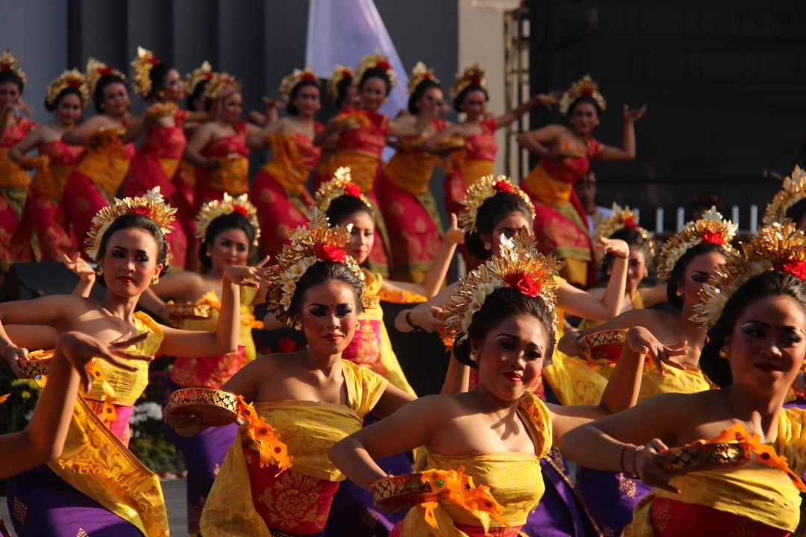

Kesenian Tari
Seni tari adalah ekspresi budaya yang menggabungkan gerakan tubuh, ritme, dan ekspresi emosional untuk menyampaikan cerita, ide, atau perasaan. Sebagai salah satu bentuk seni yang paling kuno dan universal, seni tari telah menjadi bagian integral dari berbagai budaya di seluruh dunia, memainkan peran penting dalam merayakan tradisi, menghormati leluhur, dan memperkuat identitas masyarakat.
Dalam seni tari, setiap gerakan memiliki makna yang mendalam, sering kali menggambarkan cerita mitologis, kehidupan sehari-hari, atau peristiwa penting dalam sejarah. Baik itu tarian tradisional yang diwariskan dari generasi ke generasi maupun karya-karya kontemporer yang inovatif, seni tari memungkinkan penari untuk mengekspresikan diri mereka dengan cara yang unik dan penuh makna.
Gallery
Berikut adalah foto dan video dari UKM Kesenian Tari

Pencak Silat
Pencak Silat adalah seni bela diri tradisional yang memiliki akar kuat dalam budaya Indonesia dan Asia Tenggara. Lebih dari sekadar keterampilan fisik untuk pertahanan diri, Pencak Silat juga merupakan warisan budaya yang kaya, mencakup beragam aspek seperti gerakan, musik, filosofi, dan nilai-nilai kehidupan.
Dalam praktiknya, Pencak Silat menggabungkan teknik-teknik serangan, pertahanan, dan gerakan tubuh yang elegan dan efektif. Dengan beragam gaya dan aliran yang berbeda-beda di seluruh wilayah Indonesia, setiap gerakan memiliki makna dan tujuan yang dalam, sering kali terkait dengan kepercayaan, mitologi, atau budaya lokal.
Gallery
Berikut adalah foto dan video dari UKM Pencak Silat